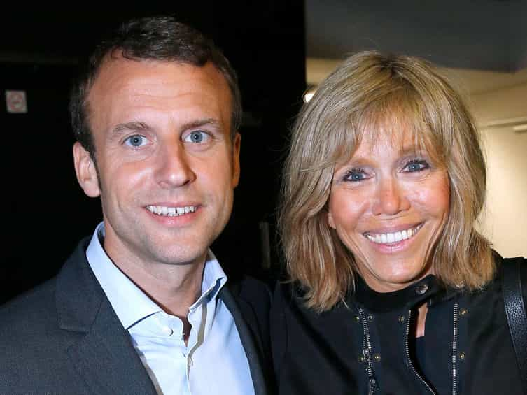

Jason thoroughly enjoys taking shots at the Politically Correct establishment and making incendiary memes. His work can be found at War Against The White Male.


By the third quarter of the 2018 Sugar Bowl featuring the Clemson Tigers vs. the Alabama Crimson Tide, one team had emerged as the clear victor. But while the action on the field was leading to an inevitable conclusion, one commercial snapped me back from calling it an early night. Google’s Year in Search 2017 ad wasn’t just a 2-minute long fluffing of the liberal establishment in entertainment and politics—the spot ultimately served as a declaration of war on Conservative America.
I’ve highlighted key moments in the commercial, as there are a multitude of images and innuendos that are meant to glorify the degenerate Liberal side of America while ignoring Conservative America altogether.
Let’s get started:
0:10: How far can north korean missiles go
Only 10 seconds in we get our first not-so-subtle jab at President Trump. While Trump’s Twitter fingers have put some on edge, many have forgotten that former President Obama also threatened North Korea in 2016. No matter who was in office, Kim Jong-Un would have continued to flex at the United States.
0:12: How much will the wall cost
Two seconds later Google goes right at Trump and Conservatives. Notice the question, “How much will the wall cost?” Google attempts to portray the wall, which symbolizes an immigration policy that most Americans are in favor of, in as negative a light as possible. Meanwhile the benefits of the wall would mean stemming illegal immigration, a little more cultural cohesiveness and a few less stories like Kathryn Steinle.
0:16: How many refugees in the world
We’ve heard that Starbucks is hiring…
By slapping this question here so early, they make it seem like Americans are concerned about the well-being of refugees. In truth, Americans are far more anxious about the impact of unfettered immigration on our country.
0:29: How to help refugees
Google tries to shoehorn the idea that Americans are highly concerned about helping refugees. I, for one, have no problem with the idea of sending monetary support to help refugees. I have a serious problem with the idea of flinging our borders open wide to refugees and people from other countries. Especially those who do not care about properly assimilating into our culture.
0:42: How to make a protest sign
Take a look at this cross-section of liberal humanity, a sad and angry clituation, if you will. The crowd is filled with Mad Pussyhatters who took a collective punch to their dusty ovaries when the Whitewater Wench lost in November. One sign in rainbow lettering reads “Women’s Rights Are Human Rights.” Another reads “More Than Just A” with the word “pussy” blotted out, undoubtedly scribbled by some bitter, vulgar, Hillary apologist.
At 0:44, they feature a lady with a “Ninety, Nasty and Not giving up!” protest sign. A closer look shows this nasty nonagenarian is rather well-dressed and sporting what appears to be a pricey Hermes purse. Senile status whore? Elderly elitist? You be the judge.
At 0:45 we see a man raising a fist and holding a sign that says “Respect Women of Color.” His back is turned and the sign is facing backward, in clear view of the camera, indicating that this was not an organic moment but an orchestrated one. Displaying the raised fist is no mistake, and it is a powerful and antagonistic image meant to piss off Conservative Americans.
0:49: Here are two fierce/brave/empowered young ladies, one rocking her pussy hat, while her friend rocks some dingy yellow teeth. These pussy paraders are a stark visual reminder that Nasty Women that Lib chicks tend to be hideous inside and out.
0:53: How to run for office
President Donald Trump is featured at this time, waving to a crowd. In a vacuum, seeing Trump after this query would connote that he was a success story, as he was an outsider to Washington. However, in the anti-Conservative context of this commercial, placing him in the ad at this point seems to have been meant to inspire others to become politically active against him.
0:59: French President Emmanuel Macron is featured shortly after Trump. While President Trump’s wife Melania is 24 years younger than him, President Macron defied the normal male biological dynamic and married Brigitte, 24 years his elder. I wouldn’t trust a guy like that parking my car, much less making political decisions for a G7 country.

1:00: Someone says “We made history tonight.” I still am unsure if this is a masculine female or a feminine guy. Thanks, Obama!
1:13 : You knew this was coming… kneeling football players! Few things irk Conservatives more than their beloved game being turned into a degenerate circus for social justice whiners. What are they protesting exactly, this time? “Racial inequality?” “Donald Trump?” Some new “cause du jour?” Doesn’t matter. With attendance and ratings dropping precipitously, the NFL is reeling. High schools and universities may be the last refuge for football in a few short years.
1:16: How to be a strong woman
It’s no secret that much of America, mostly Conservatives and men are sick of empowered/queen bee/fierce women. Of course they immediately reference the #MeToo movement, which has created an environment where women’s feelings can be weaponized against men’s livelihood. The concept of due process is not considered for a moment in the court of public opinion. We are fast approaching the point where merely working with women is a risk toward a man’s career and financial well-being.
1:27: How to be a superhero
No surprise that Google would feature Wonder Woman here. They certainly had their choice of a bumper crop of feminist-inspired heroes that were shoved down the throats of moviegoers in the past year in films like Ghostbusters, Atomic Blonde, The Mummy, Ghost in the Shell, or Mad Max. Moviegoers weren’t buying it, as theater sales have slumped miserably.
1:34: How to be fearless
Google’s version of what “fearless” is
When I think of “fearless,” usually a U.S. Navy Seal, combat medic or firefighter comes to mind. Not a 10-year old transgender. While images like this won’t fool everyone, they are part of the active campaign by the left to change the way that we perceive “bravery” and “fearlessness.” In the process they devalue those who actually are fearless; those who put their lives on the line to protect our country and keep our citizens safe.
The placement of this commercial was also telling. The ad ran during the highly anticipated Sugar Bowl. With millions of Conservative Americans shutting off the NFL this year, Google invaded one of the rapidly vanishing safe havens for men who do not want left-wing political nonsense intertwined with their entertainment. College sports have yet to be seriously compromised. With the airing of this commercial, Google is actively infringing upon men’s space and declaring war against Conservative America.
So what can we do to hit back at Google? The brand is omnipresent and thoroughly entrenched throughout the internet. It is damn near impossible to find anyone who doesn’t use some combination of YouTube, Google Chrome, Maps, Drive, etc. Millions use a Gmail, even I still do.
However, since they derive 90% of their revenue from advertising, the easiest and most effective method to hit them back is to simply remove Google as your primary search engine. Bing, Yahoo! Search, and even AOL are still viable alternatives. My personal choice is DuckDuckGo, which doesn’t track you or collect any personal information. As Conservative Americans, we need to stop financially supporting corporations that actively campaign against us and have declared war on our values.
Read More: Today’s Conservative Has Become Yesterday’s Liberal